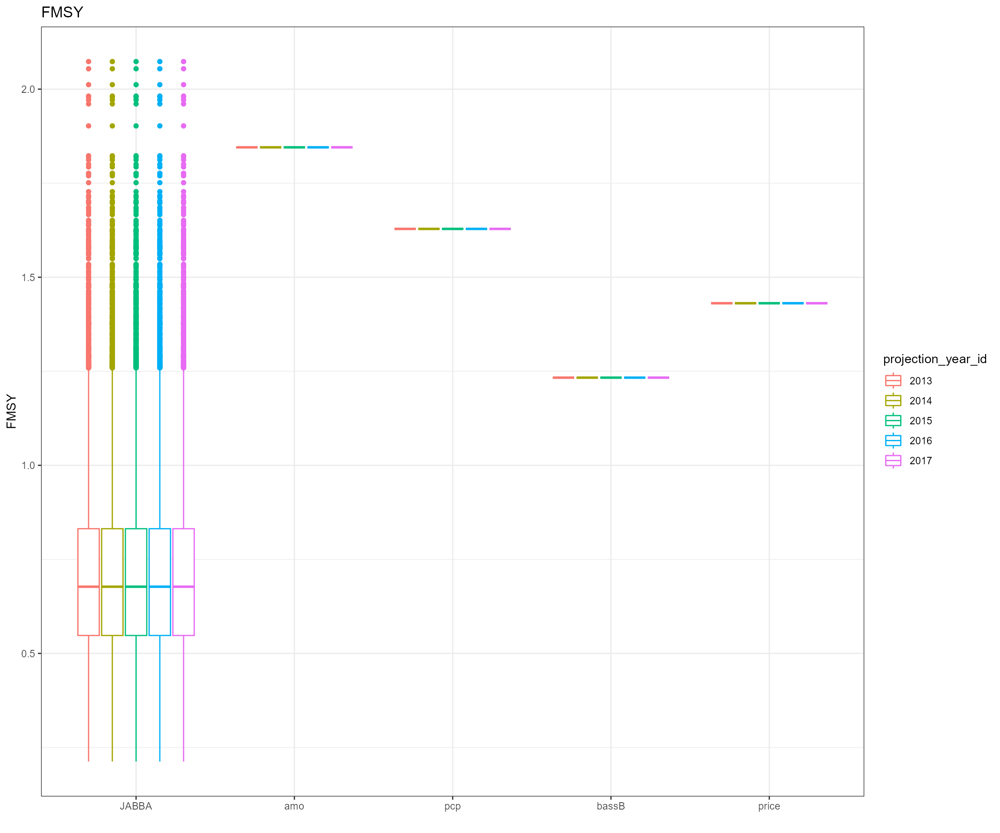
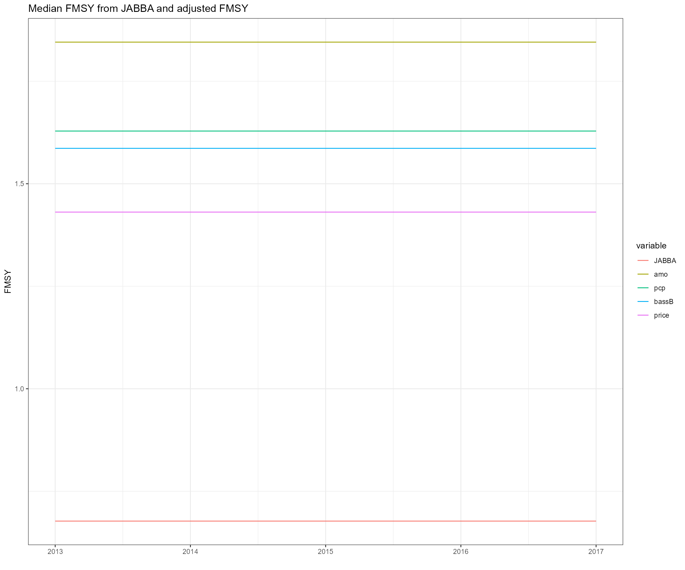
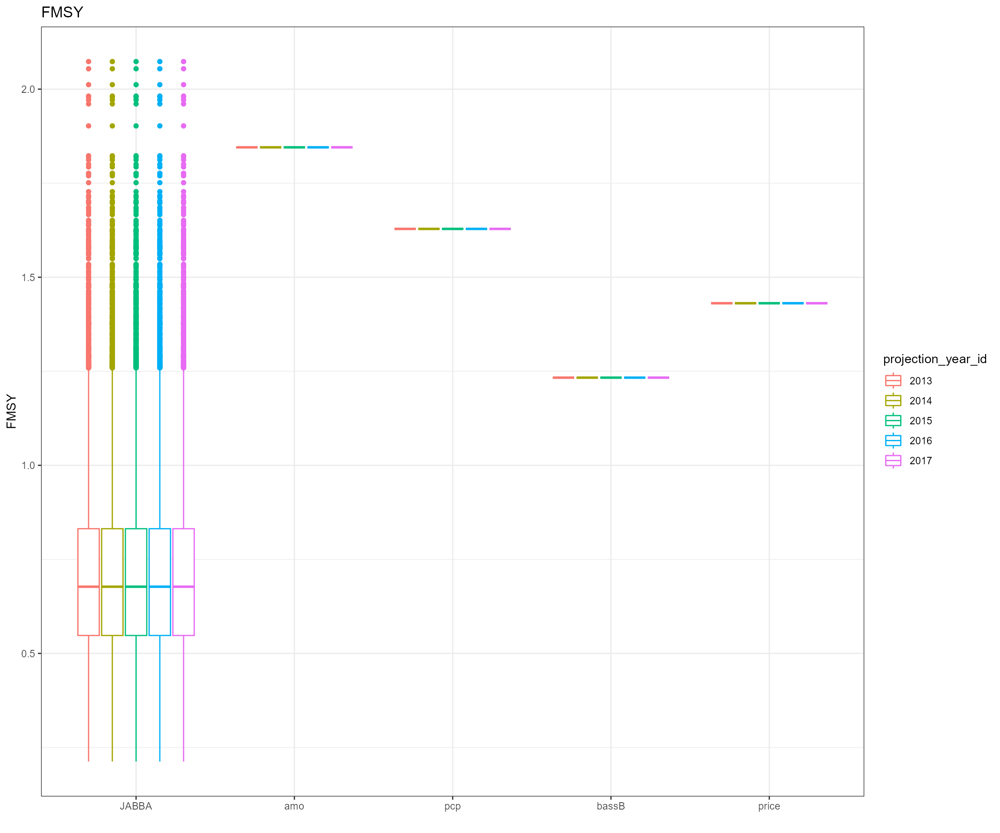
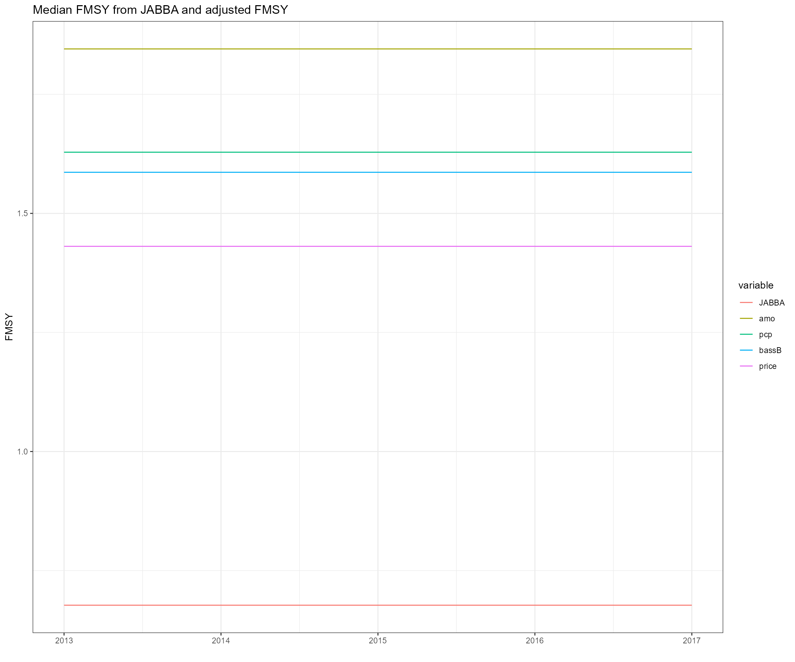
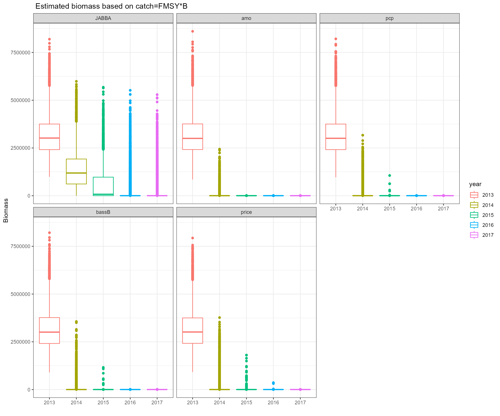
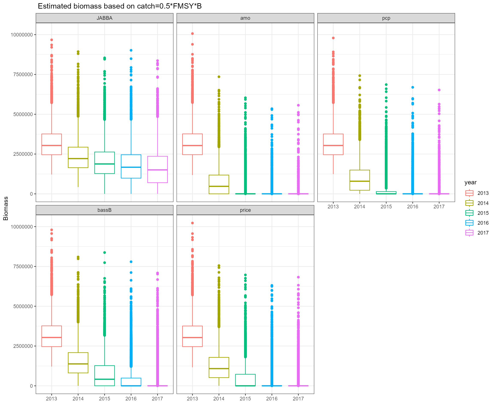

Data-moderate stock assessment
Updated on June 21, 2022
07_Data_moderate_stock_assessment.RmdJust Another Bayesian Biomass Assessment (JABBA)
- Website: https://github.com/jabbamodel/JABBA
- Version: commit d73313debf9326f2be920846ee361b3dcca8c22d
Case 0: stock assessment base run
- Case 0: K = 4000000, r = 0.8 with small CV (update input values based on known ballpark values from EwE)


Cases 1-4 are based on the settings from case 0
Case 1: Link Atlantic Multidecadal Oscillation Index with menhaden biomass estimates and adjust projections: AMO is an indicator of climate conditions and would affect recruitment variability of menhaden-like species
Case 2: Link precipitation index with menhaden biomass estimates and adjust projections: precipitation alters availability of high-salinity habitat and may affect menhaden-like species through nutrient loading
Case 3: Link biomass of Striped bass from the EwE with menhaden biomass estimates and adjust projections because bass is a major predator
Case 4: Link price of menhaden with menhaden biomass estimates and adjust projections
Linear regression models from case 1 - 4
True biomass of menhaden-like species as functions of AMO, precipitation, biomass of striped bass, and price of menhaden
Status of indicators (SOI)
-
If stock-indicator relationship is positive, \(SOI_{y} = \frac{I_{y}-I_{y}^{min}}{I_{y}^{max}-I_{y}^{min}}\)
- If stock-indicator relationship is negative, \(SOI_{y} = 1-\frac{I_{y}-I_{y}^{min}}{I_{y}^{max}-I_{y}^{min}}\)
where \(I_{y}\) represents indicator value in year y. \(I_{y}^{min}\) and \(I_{y}^{max}\) represent the minimum and maximum values of \(I\) from the time series.

| case | amo | pcp | bassB | price |
|---|---|---|---|---|
| True indices | 253334.99 | 3272.33 | 0.46 | 1466.08 |
- Using scaled or raw AMO and precipitation values do not make a difference. Here we used raw environmental values
- The quantity of economic data for Atlantic menhaden is low. Here we used economic data for menhaden from New England, Middle Atlantic, and South Atlantic regions
Adjust projection
If \(\frac{B2012_{i}}{BMSY} > 1\), \(F^{'}_{i} = FMSY^{min} + SOI2012 \times (FMSY^{max}-FMSY^{min})\)
If \(\frac{B2012_{i}}{BMSY} \le 1\) and \(\frac{B2012_{i}}{BMSY} > 0.5\), \(F^{'}_{i} = SOI2012 \times \frac{B2012_{i}}{BMSY} \times FMSY_{i}\)
If \(\frac{B2012_{i}}{BMSY} \le 0.5\), \(F^{'}_{i} = 0\)
where \(i\) represents individual iterations

 

- Slope values from linear regression models
| case | projection_year | amo | pcp | bassB | price |
|---|---|---|---|---|---|
| 0 | 2013 | 518880.05* | -31499.65 | 0.74* | -617.91 |
| 0 | 2014 | 518880.05* | -31499.65 | 0.74* | -617.91 |
| 0 | 2015 | 518880.05* | -31499.65 | 0.74* | -617.91 |
| 0 | 2016 | 518880.05* | -31499.65 | 0.74* | -617.91 |
| 0 | 2017 | 518880.05* | -31499.65 | 0.74* | -617.91 |
- Adjust catch input and project biomass based on FMSY*B
## Compiling model graph
## Resolving undeclared variables
## Allocating nodes
## Graph information:
## Observed stochastic nodes: 111
## Unobserved stochastic nodes: 124
## Total graph size: 19901
##
## Initializing model
- Adjust catch input and project biomass based on 0.5FMSYB
## Compiling model graph
## Resolving undeclared variables
## Allocating nodes
## Graph information:
## Observed stochastic nodes: 111
## Unobserved stochastic nodes: 124
## Total graph size: 19901
##
## Initializing model - Adjust catch input and project biomass based on 0.25FMSYB
## Compiling model graph
## Resolving undeclared variables
## Allocating nodes
## Graph information:
## Observed stochastic nodes: 111
## Unobserved stochastic nodes: 124
## Total graph size: 19901
##
## Initializing model